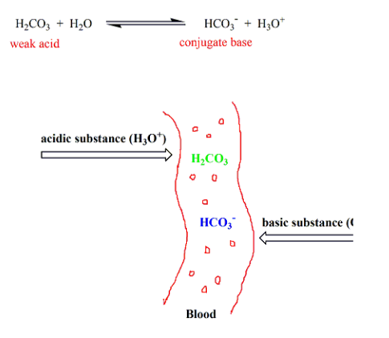
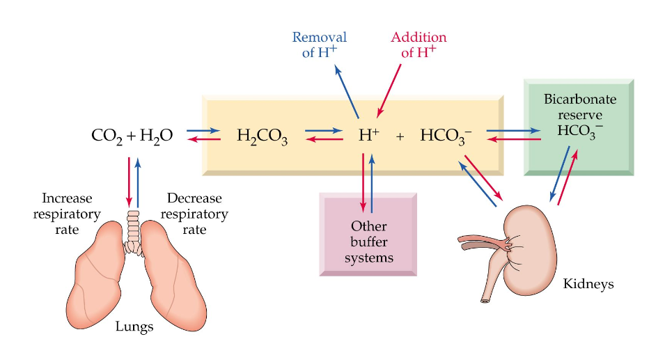
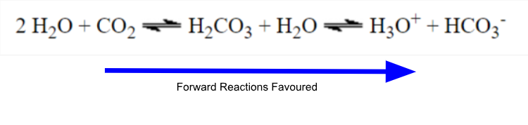

Chemical equilibriums are important in regulating the conditions required to maintain regular bodily and physiological function. The pH buffer of blood is a prime example of such an important process. This buffer ensures a balance between acidity and alkalinity in the bloodstream referred to as acid-base balance. The pH of blood is the hydrogen ion concentration of blood between a pH of 0 and 14. A buffer is an aqueous solution that can resist changes in pH after the addition of an acid or base. Regulating the pH of blood is vital as slight variations can jeopardize important biochemical mechanisms and the stability of proteins. Essentially a blood buffer maintains a pH within a healthy range (between pH of 7.35 and 7.45) by shifting hydrogen ion concentrations. A blood pH< 7.35 is called Acidosis (associated with increased acidity) while a blood pH > 7.45 is called Alkalosis (associated with increased alkalinity)- both extremes that can be potentially deadly. In this project, the emphasis will be on examining the bicarbonate ion buffer within the blood, and how it plays a crucial role in the body’s overall well-being.
Carbonic acid (H2CO3) is a weak acid , meaning it does not ionize completely in water. This allows it to be in equilibrium with bicarbonate (HCO3-) and hydronium (H3O+) ions. Similarly, Carbonic acid (H2CO3) disassociates to form another equilibrium with Carbon dioxide (CO2) and water (H2O) because of its instability. When there is a decrease in pH, the equilibrium moves backward to a lower concentration of H3O+. Vice versa, the reaction moves forward when the pH is too high to lower the concentration of H3O+.
The lungs utilize a process known as pulmonary regulation to regulate the pH of blood by controlling the amount of CO2 gas that exits the lungs.
The lungs utilize a process known as pulmonary regulation to compensate for increased acidity of the blood, known as acidosis. A decrease in pH is sensed by arterial and central chemoreceptors, which in turn leads to deeper faster breathing. According to Le Chatelier's principle, when there is an increase in [H3O+], and a subsequent decrease in pH, the reaction moves backward to consume extra product and simultaneously increase the pH. As the reaction moves backward more carbon dioxide is formed which exits through the lungs through exhalation. This change causes less H3O+ to be formed, leveling out the pH to within a healthy range. This process is commonly known as panting. During alkalosis, the rate of breathing is decreased to accumulate carbon dioxide (CO2) in the blood, favoring the forward reaction and thus decreasing the pH of blood to a normal level.
The kidneys use a process known as renal regulation to adjust the amount of bicarbonate that is reabsorbed from urine and the amount of hydronium ions secreted into blood to regulate pH.
The application of the following equilibrium is also found in the kidneys through the process of renal regulation, wherein the kidneys control the amount of excreted hydronium ions (H3O+) and reabsorbed bicarbonate (HCO3-). When the pH of the blood is too high (Alkinsosis), the kidneys reduce bicarbonate (HCO3-) absorption and hydronium ion (H3O+) secretion. By Le Chatlier’s principle, the reaction moves forward to replace the lost product, in which the pH decreases as hydronium ion concentration increases. When the pH of the blood is too low (Acidosis), the kidneys increase the reabsorption of bicarbonate (HCO3-) to favor a backward reaction, consuming the extra product, and increasing the pH of blood to a regular level.
The bicarbonate ions found in the red blood cells play a vital role in the transportation of carbon dioxide through the bloodstream. Carbon dioxide binds to the bicarbonate ion in the red blood cell, and is moved throughout the bloodstream, until it has reached its end destination- usually the lungs for exhalation. Hemoglobin also assists with the transportation of carbon dioxide. The reversible reaction of carbon dioxide and water into carbonic acid is regulated by the enzyme, carbonic anhydrase, which is found in red blood cells.
The bicarbonate buffer also plays a vital role in the survival of marine creatures such as coral and mollusks which utilize bicarbonate to produce calcium carbonate as part of the backbone of their skeletons. Dissolved CO2 in the water forms an equilibrium with carbonic acid (H2CO3). The carbonic acid dissociates into bicarbonate (HCO3-) and hydronium (H3O+) ions, forming another equilibrium. The bicarbonate ions further dissociate into H3O+ and carbonate (CO32-) ions. The carbonate ions interact with abundant ions such as Ca2+, forming calcium carbonate (CaCO3) for marine creatures to utilize.
Hypoventilation happens when someone is breathing at a very slow rate. This leads to the accumulation of CO2 in the bloodstream. By Le Chatelier’s principle, the increase in concentration of CO2 favors the forward reaction to consume excess product. As a result, the concentration of H3O+ increases, decreasing the pH. This causes something known as respiratory acidosis which can lead to breathlessness, headaches, and in severe cases a coma.
In an effort to remove excess CO2, the central nervous system increases the rate of respiration and heart rate, which is known as panting
Increased breathing leads to more exhalation of CO2, putting a stress on the equilibrium, and favoring the backward reaction to replace the lost reactant. This decreases the concentration of H3O+ by Le Chatelier’s principle, and therefore increases the pH. As a result, this can cause respiratory alkalosis, a condition in which the pH of blood is higher than the healthy range. Side effects include twitching, tremors, and in more severe cases seizures.
Kidney dysfunction e.g. chronic kidney disease, diabetes, and severe diarrhea can result in a lower concentration of bicarbonate in the blood, so the reaction moves forward to replace lost product. Subsequently, the concentration of H3O+ increases with the favorability of the forward reaction. This leads to a pH lower than the healthy range, causing metabolic acidosis, a condition associated with low pH of blood. Some side effects of this condition include demineralization of the bones, muscle weakness, and decreased immune function.
When urine is lost or stomach acid is lost from vomiting, the concentration of hydronium Ions decreases, increasing the pH. To compensate for loss of product, the reaction moves forward to rebalance the pH. This loss of acid is called metabolic alkalosis, a condition associated with higher blood pH. Side effects include twitching, tremors, and in severe cases seizures.
When severe levels of shock or trauma are inflicted on someone, there is a possibility that lactic acid and other acids can be released in the bloodstream. This can directly negatively affect the acid-base equilibrium in the blood. Hypovolemic shock or extensive tissue damage are examples of cases where shock and trauma is great enough that lactic acids and other acids will seep into the bloodstream, deeply affecting the blood’s pH and the buffer capacity. This would result in parts of the brain to be stimulated to produce faster and deeper breathing patterns. In more severe cases, a lower blood pH can result in extreme drowsiness, eventually leading to coma. A decrease in blood pH will force the body to start pulmonary regulation, which increases the rate of exhalation, getting rid of more carbon dioxide in order to get back to equilibrium. Therefore the reaction would move backwards to get back to equilibrium.